工具会变，接力链不会消失
问题 → 需求 → 设计 → 开发 → 测试 → 上线 → 验收
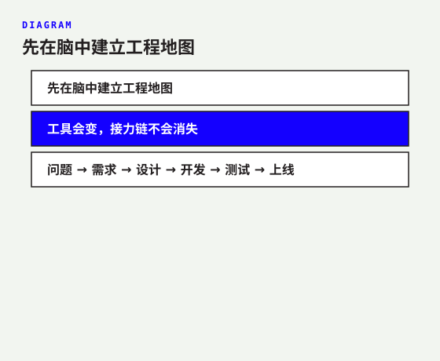
产品经理 → UI → 前端 → 后端 → 测试 → 运维
上线后 → 回到产品经理做业务验收
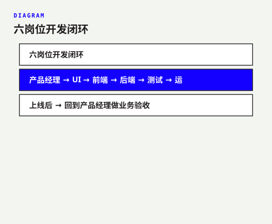
传统：访谈纪要 · 长文档 · 排需求
定问题 · 控范围 · 定验收
PRD.md → UI
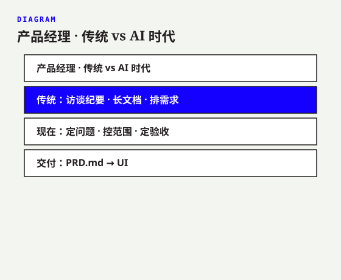
传统：线框 · 视觉稿 · 调色与组件
信息层级 · 操作路径 · 异常状态
设计规范 · 流程 · 原型 → 前端
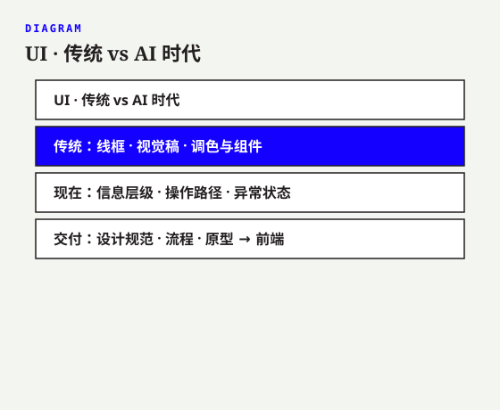
传统：手写结构 · 样式 · 重复交互
实现选择 · 还原度 · 状态 · 可维护
页面 + 数据需求 → 后端
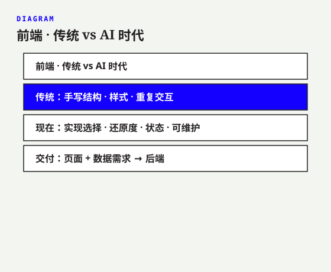
传统：接口 · 查询 · 业务代码
系统边界 · 契约 · 数据 · 安全稳定
服务 · 接口 · 数据库 · 运行手册 → 测试
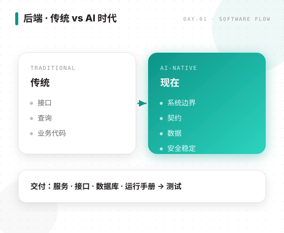
传统：重复点击 · 手工回归
风险覆盖 · 边界 · 证据 · 防复发
失败 → 责任岗位修复 → 复测
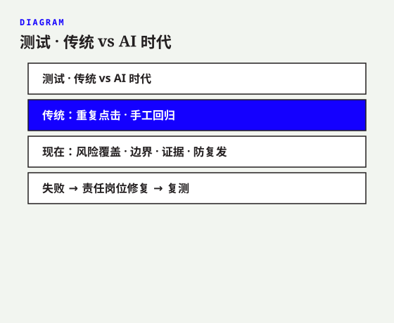
传统：装环境 · 手工发布 · 临时救火
自动化 · 监控 · 备份 · 回退 · 审批
上线地址 + 部署说明 → 产品经理
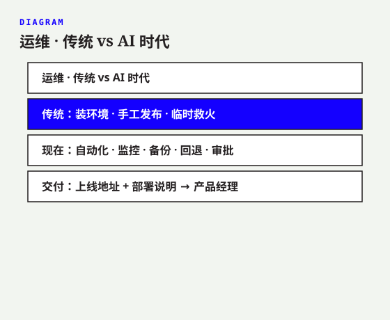
PRD → 设计与原型 → 页面与字段 → 服务与说明
测试报告 → 上线地址 → 业务验收
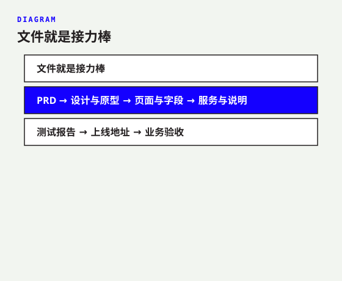
大型团队：排期 · 风险 · 跨团队协调
由学员亲自承担项目推进
暂由后端承担
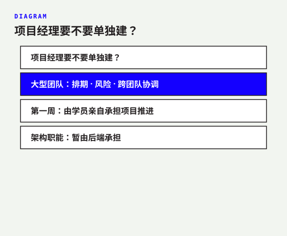
制作劳动 ↓ 判断与闭环 ↑
工具只是工作台
在 TRAE 建立六岗位智能体
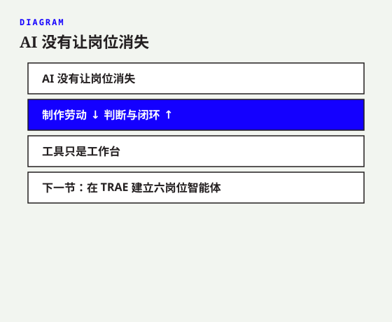